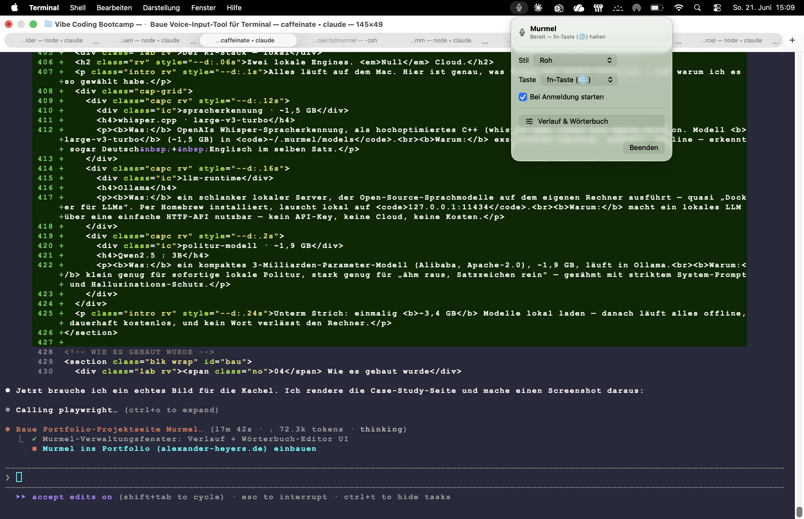

Eine native macOS-App, die zuhört, wenn ich eine Taste halte, und das Gesprochene lokal in sauberen Text verwandelt. Kein Abo, keine Cloud — alles läuft offline auf meinem Mac. Hier ist, wie sie entstand: die Entscheidungen, die 8 Agents, die zwei Bugs und der Beweis.

Heute hat es mich geärgert, dass ich für ein Diktier-Tool 15 € im Monat zahlen soll, und mein Audio in deren Cloud wandert. Der Gedanke: Ich habe ein Mikrofon. Ich habe Claude Code. Ich habe alles, was ich brauche. Was ich brauche, muss ich auch selbst bauen können.
Klarheit ist der Skill, nicht Syntax.
Bevor eine Zeile entstand, kamen fünf gezielte Fragen mit Trade-offs — der Unterschied zwischen „irgendwas bauen" und „das Richtige bauen".
Der Trick: zuerst Gerüst + feste Verträge (Protokolle) — was jede Komponente können muss. Dann bekam jeder Agent genau eine Datei gegen diesen Vertrag. Kein Agent fasst fremden Code an → keine Konflikte.
✓ AudioRecorder.swift Mikro → 16 kHz Mono WAV ✓ WhisperTranscriber.swift WAV → Text (whisper.cpp) ✓ OllamaPolisher.swift Politur + Fallback auf Rohtext ✓ PasteboardInserter.swift ⌘V ins aktive Fenster ✓ HotkeyMonitor.swift globaler fn-Halte-Hotkey ✓ VocabularyStore.swift Fachbegriffe korrigieren ✓ HistoryStore.swift Diktat-Verlauf (SQLite) ✓ VoiceCommandProcessor.swift„neue Zeile", „punkt" … $ swift build -c release Build complete!
Beide laufen offline, beide installiert das mitgelieferte setup.sh per Homebrew.
Was: OpenAIs Whisper als hochoptimiertes C++, lokal auf Apple Silicon. Warum: top Deutsch, schnell, erkennt Deutsch + Englisch gemischt.
Was: ein schlanker lokaler Server für Open-Source-LLMs — „Docker für LLMs". Per Homebrew, lauscht auf 127.0.0.1:11434. Warum: lokales LLM per HTTP, kein API-Key.
Was: kompaktes 3-Mrd.-Modell (Alibaba, Apache-2.0), läuft in Ollama. Warum: klein genug für sofortige Politur, gezähmt mit striktem Prompt.
$ brew install whisper-cpp # → whisper-cli $ curl -L …/ggml-large-v3-turbo.bin # ~1,5 GB → ~/.murmel/models $ brew install ollama # lokaler LLM-Server $ ollama pull qwen2.5:3b # ~1,9 GB Politur-Modell === ~3,4 GB gesamt · danach offline · 0 €/Monat ===
Statt zu raten: ein Datei-Log an jeder Pipeline-Stufe — und damit präzise gesehen, wo es bricht.
macOS bindet das Bedienungshilfen-Recht an die Code-Signatur. Ad-hoc-Signaturen ändern den Hash bei jedem Build → Recht „stirbt". Fix: stabile selbst-signierte Identität.
Das Politur-Modell kippte das Wörterbuch in den Text und antwortete wie ein Chatbot. Fix: strikter System-Prompt + Halluzinations-Schutz + Standard „Roh".
iCloud (Documents) hängt geschützte Attribute an die .app → codesign bricht. Fix: Bundle im Temp-Ordner außerhalb iCloud bauen & signieren.
# Bug 2 — Eingabe vs. was das Modell daraus machte: Rohtext = "Hallo!" füge ein = "Claude, Docker, … n8n, wie kann ich Ihnen helfen?" # 🤦 # Nach den Fixes: Rohtext = "Hallo!" füge ein = "Hallo!"
Ein echtes Diktat, ein Take, Deutsch und Englisch mitten im Satz gemischt — genau so eingefügt:
"Okay, das wird jetzt ein längerer Test für meine neue Murmel-App.
Ich möchte ausprobieren, ob das alles so klappt, wie es klappen sollte.
Geh mal davon aus, dass wir sowohl prompten als auch colloquial,
English as well, you should get everything."
Code-Switching DE↔EN, korrekte Zeichensetzung, sogar „Murmel-App" mit Bindestrich — fehlerfrei. Whisper large-v3-turbo in Bestform.
Ein natives, glasiges Fenster (SwiftUI-Materials) — bedienbar wie Wispr Flow, nur selbst gebaut.
Beim Sprechen erscheint der Text fortlaufend in einem schwebenden Overlay (schnelles base-Modell) — final akkurat mit large-v3-turbo eingefügt.
Roh · E-Mail · Code · Claude-Prompt · Brainstorming — aktiven Modus wählen und die Formulierung pro Modus selbst anpassen.
Modi „→ Englisch" / „→ Deutsch": Deutsch sprechen, übersetzt eingefügt — lokal via Ollama/Qwen.
Text kopieren, Anweisung sprechen („mach förmlich", „als Bullet-Liste") — der kopierte Text wird umgewandelt.
Frage sprechen → Antwort eingefügt; oder langes Diktat → knappe Zusammenfassung. Mini-LLM direkt am Cursor.
Begriffe selbst pflegen — oder Ollama findet aus dem Verlauf falsch gehörte Fachbegriffe und schlägt Korrekturen vor.
Wie du sprichst: Wörter pro Diktat & Satz, Füllwörter, Top-Begriffe + Lern-Tipps.
Alle Diktate durchsuchbar, je Eintrag „erneut einfügen".
Mikrofon, Erkennung, Politur, Übersetzung, Live-Vorschau — kein Byte verlässt den Rechner, 0 €/Monat.
Eine native macOS-App ohne Code-Hintergrund, end-to-end: Audio, Spracherkennung, lokales LLM, globaler Hotkey, Datenbank, Code-Signierung. Geplant, orchestriert, debuggt, ausgeliefert — als Open-Source zum Klonen.